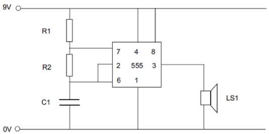
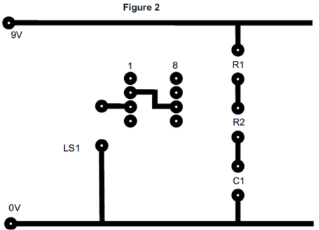
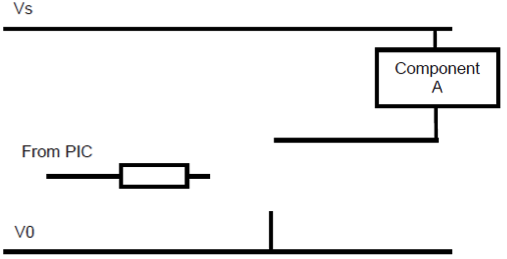
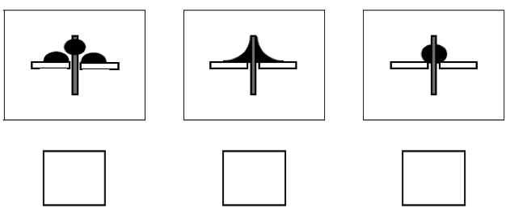

Circuit Design and Manufacture
Table of Contents
1 Designing a Circuit
- Prior to manufacturing, engineers need to design and test their circuit ideas to ensure they work correctly.
Software Simulation
- By modelling a circuit in software (we use Circuit Wizard), the design can be quickly changed, and components swapped in and out. This has the advantages that no real-world components are needed, that when components blow they can be reset rather than needing costly replacement, simulations often show the flow of current in the circuit to help with design. Designing PCBs on a computer also allows for changes to be made without having to re-draw an entire artwork by hand.
- The disadvantages are that the simulation is only as good as the software, so what works on the computer doesn’t always work in real life. Additionally, software can be very expensive.
Breadboarding
- By creating a physical representation of a circuit on a breadboard with actual components, an engineer can model a circuit prior to manufacturing it. The breadboard advantages are that because they are not soldered into place, components can be quickly swapped in and out, and that if a circuit works on a breadboard, the engineer can be confident it will work when manufactured.
- The disadvantages are that wires can come out of the holes, when components fail they need to be thrown away, breadboards can become very densely populated and hard to read, and breadboarding requires the engineer to have all actual the components for their product, making experimentation hard if they want to try a new idea.
2 Manufacturing a permanent circuit
Chemical Etching
- Etching PCB’s (Printed Circuit Boards) is one way to create a permanent circuit. Two alternatives would be to use stripboard, or alternatively using a milling machine to channel out tracks into copper board; both of these are better for the environment than using chemicals like we do in school. Using a PCB has the advantage of having a small physical footprint (i.e. being smaller than stripboard), and as it is permanent, will produce a reliable and long-lasting product when finished.
- To manufacture a PCB using an etch-tank, the steps are:
- Print the PCB artwork onto transparency paper.
- Trim a piece of photo-board to the correct size, peel off the protective layer, and place the artwork and board in the UV light box for three minutes to soften the photo-resist layer on the board.
- Wearing an apron, gloves and goggles, place the exposed PCB into the pre-heated developer tank for around 30s to remove the softened photo-resist layer from the PCB. Wash the PCB under the tap once done, and visually inspect.
- Put the PCB into the pre-heated etchant tank, and turn on the bubbles to accelerate the etching process for around 5 minutes.
- Once all the unwanted copper has been removed, wash and dry the PCB. Perform a visual inspection to ensure the process is complete.
- Drill holes, trim precisely to size and use a resist stripper.
- Finally, the board can be placed in a tinning solution if it not to be etched immediately.
- Using an etch-tank has many advantages:
- The PCB can be designed very efficiently, so the size will be small.
- Labels or a silkscreen can be added to make soldering easier.
- Debugging the circuit is easier, as tracks can be easily followed
- Once designed, a PCB can be easily etched over and over again.
- There are a number of disadvantages, though:
- An etch tank costs several hundred pounds, and the chemicals go stale over time, and will need replenishing.
- The chemicals need to be disposed of correctly.
- The process is messy.
- Photoboard is expensive compared to strip-board.
- Designing a PCB requires a degree of skill and experience to reduce the board-size. Creating designs is a time-consuming task.
3 Testing a Circuit
- Once a PCB (or breadboard) has been built, there are several ways to test the board, or find faults in it.
Techniques
- A Multimeter is a multi-purpose instrument which can be used in a variety of ways:
- a. Continuity can test whether two PCB tracks in close proximity are touching or not, whether a ground pin has a connection to the negative end of a battery, whether both drilled ends of a track are connected or not or whether a soldered point has failed.
- b. DC Voltage can test that components such as PIC chips and 555 timers have a potential difference, when the circuit is energised.
- c. Resistance can be used to test that individual resistors in the circuit are working correctly.
- A visual inspection of a PCB will show whether all the tracks have etched correctly, that all the holes have been drilled centrally on the pads, that the PCB hasn’t been over-trimmed to chop off any tracks, that polarised components (e.g. LEDs, electrolytic capacitors) are correctly oriented and that any ICs (e.g. 555 timer chips) have been inserted the correct way around.
- Once the above have been completed, the circuit can be energised briefly while ICs and voltage regulators are checked for over-heating (a symptom of short circuits).
- Once the circuit is built, an oscilloscope can be used on output pins to show voltage levels over time on its output screen (e.g. to see the output on an astable 555 timer chip going high-low).
4 Recap
Past Paper Questions
- June 2010, Q4. You are advised to spend about 30 minutes on this question. This question is about Printed Circuit Board (PCB) design and construction.
- (a) It is best to test that a circuit works before building a PCB. Describe one method of testing a circuit before building a PCB. (3 marks)
- (b) The circuit below pulses the speaker.

- Complete the missing five PCB tracks on Figure 2 for the circuit in Figure 1. The pads and some of the tracks have been completed for you. Your tracks should not cross at any point and should be drawn neatly.

- (c) Give two advantages of using Computer Aided Design (CAD) to design PCBs. (4 marks)
- (d) (i) List four main stages in a PCB production process. (4 marks)
- (d) (ii) Describe in detail the PCB production process outlined in part (d) (i). (8 marks)
- June 2012, Q5c. The control system for a coffee vending machine is running on a PIC (microcontroller). On the diagram below, show the connections between the PIC and the component that operates the hot water valve (component A).

- You should also name any other components used. (4 marks)
- June 2012, Q7. You are advised to spend about 15 minutes on this question. This question is about fault finding on printed circuit boards.
- (a) Tick the box below the joint that has been correctly soldered. (1 mark)

- (b) Name two different types of electronic test equipment. (2 marks)
- 7 (c) Describe how to find faults in a printed circuit board. (8 marks)